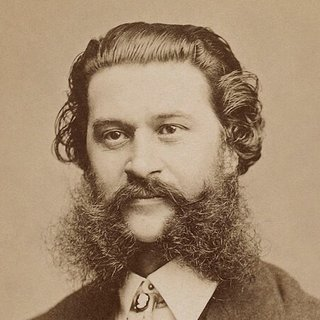

Komponisten › Johann Strauss (Sohn)

Johann Strauss (Sohn)
Der „Walzerkönig“: Mit seinem Orchester brachte er Wien und die ganze Welt zum Tanzen.
Leben
Er wurde in Wien als Sohn von Johann Strauss (Vater) geboren, der bereits ein berühmter Walzerkomponist war. Der Vater wollte nicht, dass er Musiker wird, doch er lernte heimlich Geige.
1844 debütierte er mit neunzehn Jahren mit seinem eigenen Orchester und übertraf bald den Ruhm seines Vaters. Er dirigierte Konzerte in ganz Europa und sogar in den Vereinigten Staaten.
Er schrieb rund 500 Werke – Walzer, Polkas und Märsche – sowie Operetten wie Die Fledermaus (1874).
Porträt: Fritz Luckhardt, gemeinfrei, von Wikimedia Commons.

Wissenswertes
- An der schönen blauen Donau (1867) entstand als Stück für Männerchor; in der Orchesterfassung ist der Walzer fast zu einer zweiten österreichischen Nationalhymne geworden.
- Er ist die traditionelle Zugabe beim Neujahrskonzert der Wiener Philharmoniker, das jedes Jahr in die ganze Welt übertragen wird.
- Auch seine Brüder Josef und Eduard waren Komponisten und Dirigenten: eine echte Walzerdynastie.
Am Klavier
- Der Walzer steht im Dreiertakt: ein Bass auf der Eins und zwei leichte Akkorde auf Zwei und Drei.
- Lass die Melodie „schwingen“, als würde sie tanzen: kleine Verzögerungen vor den wichtigen Noten.
- Die linke Hand darf die rechte nie zudecken.
Seine Stücke zum Lernen 1 Stück

Lerne es Note für Note mit Piano Learning
Mit „Warte auf die Note“ hält das Stück an, bis du die richtige Taste spielst – auf dem Handy oder auf deinem eigenen Klavier (die App hört zu). Hände einzeln, Tempo ab 10 %, die Noten immer vor Augen.
Kostenlos bei Google Play laden Kostenlos wie La Campanella, der Türkische Marsch, Jingle Bells und Bruder Jakob. Hunderte weitere Stücke mit einem einzigen Kauf, ohne Abo.